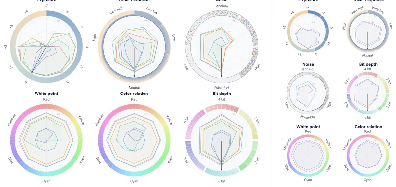
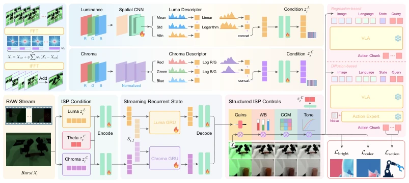
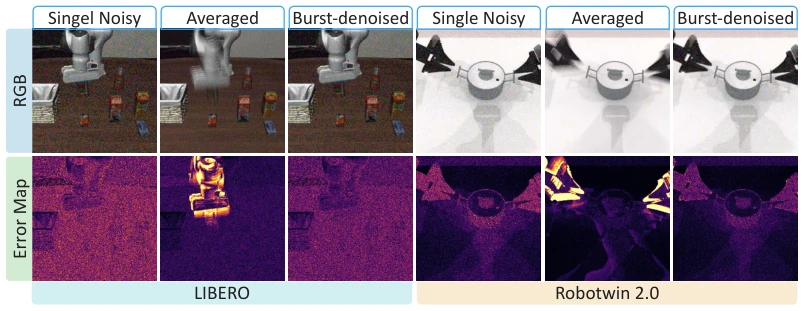
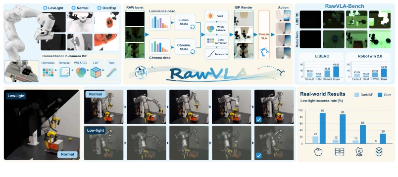
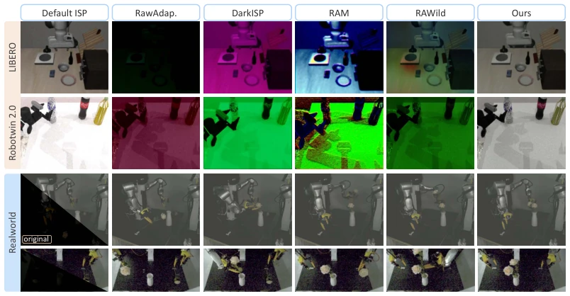
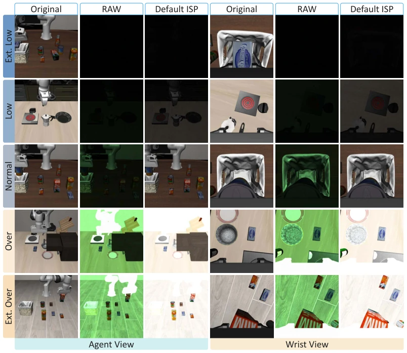
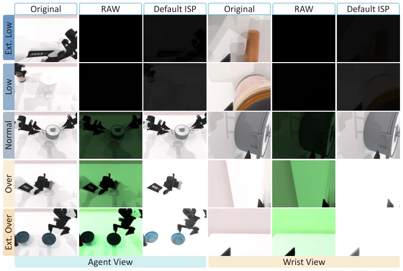
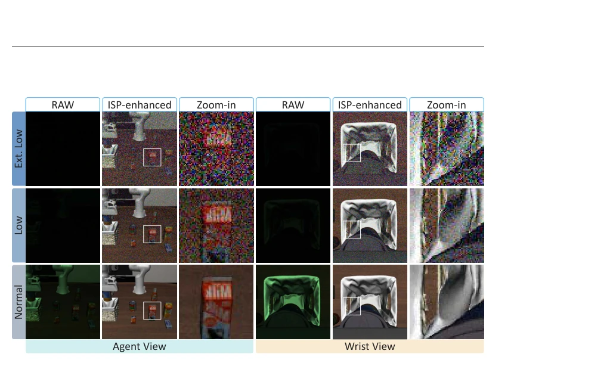
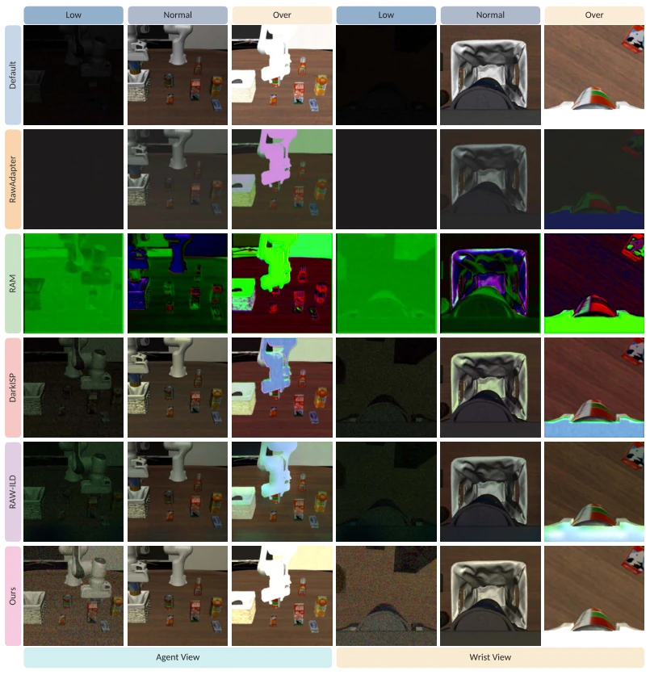
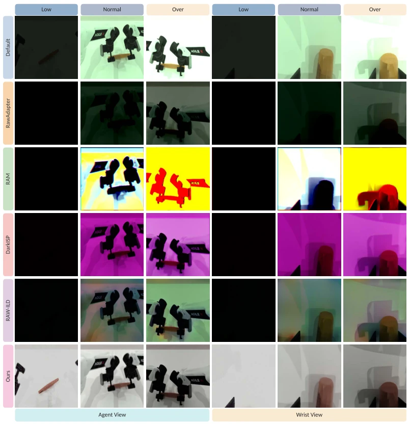

This paper finally brings the ISP stage, neglected by VLA models, back into the spotlight, effectively loosening the constraints of the "black box camera". The authors keenly point out that fixed ISP leads to the loss of critical signals, causing robots to go "blind" under low-light or overexposed conditions. RawVLA, as a lightweight neural ISP, surprisingly adapts to frozen VLA policies, a clever move that avoids the hassle of retraining large models. However, it relies on RAW data input, and many consumer-grade cameras in the real world do not output RAW directly; does this not add a hurdle for deployment? Furthermore, although simulation performance is impressive, while the improvement in real-world low-light success rate is significant (from 0% to 66.5%), the absolute value still has room for improvement. Overall, this transforms "image quality" from an aesthetic problem into a "task success" problem; the approach is sound, but do not expect it to solve all sensor hardware bottlenecks.
研究动机Motivation
现有 VLA 研究通常假设相机 ISP 是固定的、任务无关的预处理步骤 (Brooks et al., 2019; Diamond et al., 2021)，直接将 RAW 转换为 RGB 后输入模型。这种设计忽略了成像管线对动作预测的实质性影响，特别是在低光、高动态范围等恶劣条件下，ISP 的裁剪、降噪或色调压缩可能掩盖任务关键细节。之前的任务导向 ISP 研究多聚焦静态视觉任务 (Cui et al., 2026)，缺乏对 VLA 行为影响的系统性评估。本文指出，不同 ISP 维度（增益、噪声、色响应等）对 VLA 模型的影响程度差异巨大，且现有方法无法在保持 VLA 骨干冻结的同时自适应优化成像参数，导致机器人在非标准光照下鲁棒性不足。
Existing VLA research typically assumes camera ISP is a fixed, task-agnostic preprocessing step (Brooks et al., 2019; Diamond et al., 2021), directly converting RAW to RGB before inputting into the model. This design overlooks the substantial impact of the imaging pipeline on action prediction, particularly under harsh conditions such as low light and high dynamic range, where ISP cropping, denoising, or tone compression may mask task-critical details. Previous task-oriented ISP research has mostly focused on static visual tasks (Cui et al., 2026), lacking systematic evaluation of the impact on VLA behavior. This paper indicates that the degree of impact of different ISP dimensions (gain, noise, color response, etc.) on VLA models varies significantly, and existing methods cannot adaptively optimize imaging parameters while maintaining a frozen VLA backbone, leading to insufficient robustness of robots under non-standard lighting conditions.

Figure 2: ISP sensitivity across simulation benchmarks. The left panel shows LIBERO results for fine-tuned VLA and WAM policies provided by StarVLA (StarVLA Community, 2026). The right panel shows Qwen3-OFT and FastWAM fine-tuned on RoboTwin 2.0 Easy and Hard (Hard adds randomized clutter, lighting, textures, and tabletop heights), which moderately improves robustness.
RawVLA overall adopts a streaming neural ISP architecture, with the input being demosaiced linear RAW sequences. First, 6-frame causal RAW data is processed via frequency-domain burst denoising. The core innovation lies in the decoupled photometric condition module: luminance information (spatial features + absolute descriptors) and chrominance information (scale-invariant statistics) are encoded into independent GRU states respectively, preventing luminance leakage from affecting color temperature estimation. The decoder predicts structured ISP parameters (exposure EV, white balance, color correction matrix, monotonic tone curve), generating RGB images for the frozen VLA policy to use. Training employs an action-driven objective, requiring no pixel-level supervision, updating ISP parameters solely via backpropagation through VLA action loss, supplemented by regularization constraints on luminance mean and chrominance range, ensuring rendered images conform to physical common sense and facilitate policy execution.

Figure 3: Overview of RawVLA. A causal linear RAW burst is summarized by factorized luminance and chroma descriptors, fused with previous ISP parameters through decoupled recurrent states, and decoded into structured exposure, white-balance, color-correction, and monotonic tone controls. The rendered image is passed to a frozen VLA policy for action prediction.

Figure 8: Burst-denoising comparison on agent-view observations from LIBERO (Liu et al., 2023) (left) and RoboTwin 2.0 (Chen et al., 2026b) (right). The top row compares a single noisy frame, direct averaging of K = 6 consecutive frames, and our frequency-domain burst denoising with K = 6. The bottom row shows the corresponding error maps relative to the noise-free clean image. Direct averaging removes substantial sensor noise but blurs moving arms and objects, whereas burst denoising better preserves dynamic scene content while suppressing noise.
Evaluated on RawVLA-Bench (based on LIBERO and RoboTwin 2.0) and real dual-arm tasks. Comparison baselines include fixed Default ISP and neural ISPs such as DarkISP, RAM, RAWild. The metric is task success rate. Simulation results show RawVLA significantly outperforms baselines under extreme low-light and overexposure conditions; LIBERO average success rate increased from 43% to 68.82%, RoboTwin 2.0 from 43.91% to 54.98%. In real-world low-light tasks, Default ISP failure rate is 0%, RawVLA reaches 66.5%. Ablation studies indicate that separated luminance/chrominance states and spatio-temporal context are crucial for robustness. Inference speed reaches 168 FPS, meeting real-time requirements.

Figure 1: We propose RawVLA, an embodied and adaptive neural ISP module for VLA models, and RawVLA-Bench, a RAW-domain manipulation benchmark based on LIBERO and RoboTwin 2.0.

Figure 4: Qualitative results in simulation and the real world. The first and second rows compare agent-view observations rendered by the Default ISP and RawVLA on LIBERO and RoboTwin 2.0, respectively. The final row shows a real-world task completed under low-light conditions.

Figure 5: RawVLA-Bench observations on LIBERO (Liu et al., 2023) across five ambient-light intensity levels ranging from extreme low light and low light to normal, overexposure, and extreme overexposure. Each level shows the original RGB reference, synthesized RAW observation, and its default-ISP rendering. Agent and wrist views use the same unprocessing procedure.
其他图片Other Figures

Figure 6: RawVLA-Bench observations on RoboTwin 2.0 (Chen et al., 2026b) across five ambient- light intensity levels ranging from extreme low light and low light to normal, overexposure, and extreme overexposure. Each level shows the original RGB reference, synthesized RAW observation, and its default-ISP rendering. Agent and wrist views use the same unprocessing procedure.

Figure 7: Synthetic sensor noise on LIBERO (Liu et al., 2023). The figure shows noisy RAW observations and their corresponding RGB renderings after ISP gain amplification and subsequent processing across progressively lower illumination levels. Noise becomes increasingly pronounced as the illumination decreases.

Figure 9: Processed agent-view and wrist-view observations from the LIBERO portion of RawVLA- Bench under low, normal, and overexposed illumination. The rows compare the Default ISP with neural ISP methods using Qwen3-OFT as the policy backbone.

Figure 10: Processed agent-view and wrist-view observations from the RoboTwin 2.0 portion of RawVLA-Bench under low, normal, and overexposed illumination. The rows compare the Default ISP with neural ISP methods using PI-0.5 as the policy backbone.